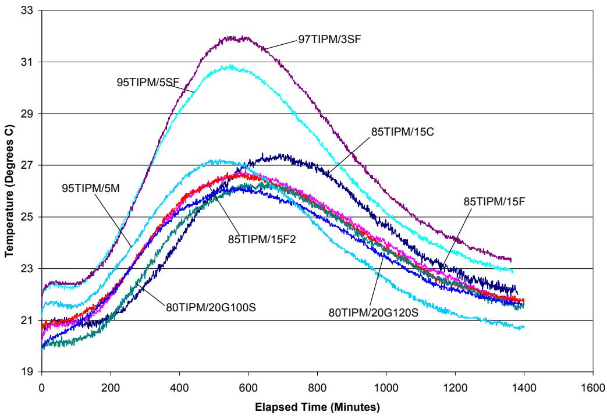
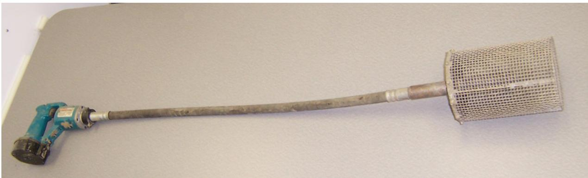
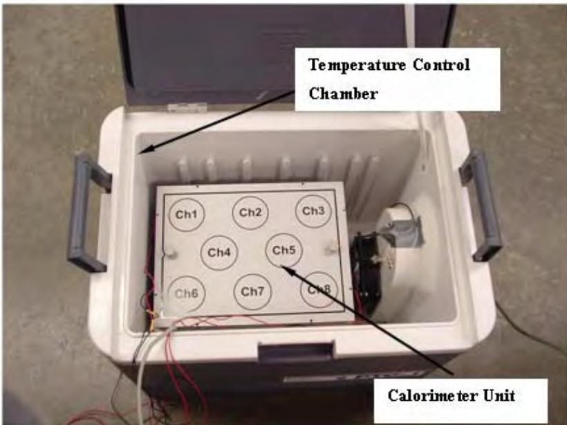
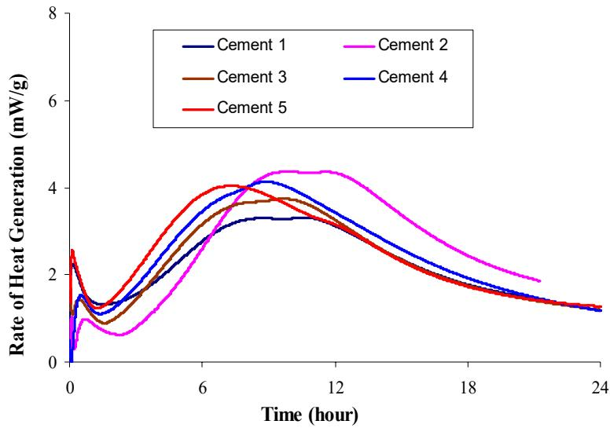
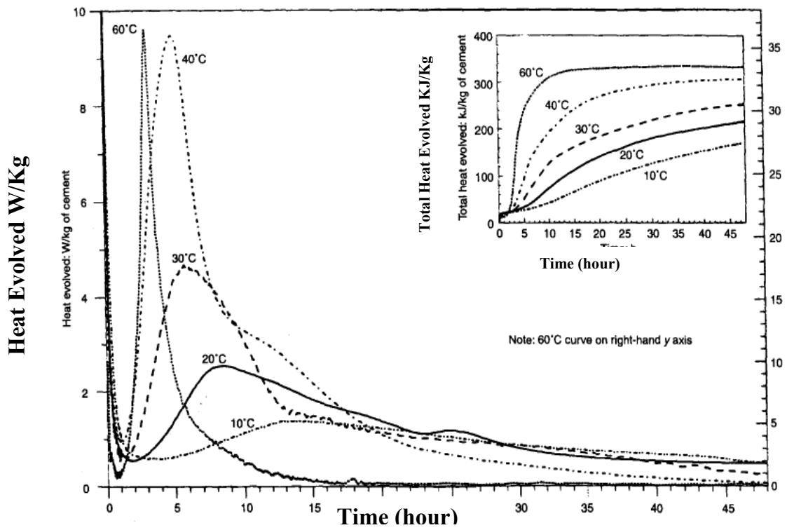
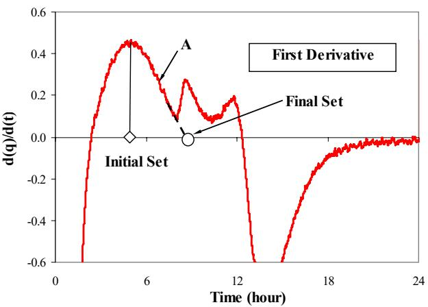
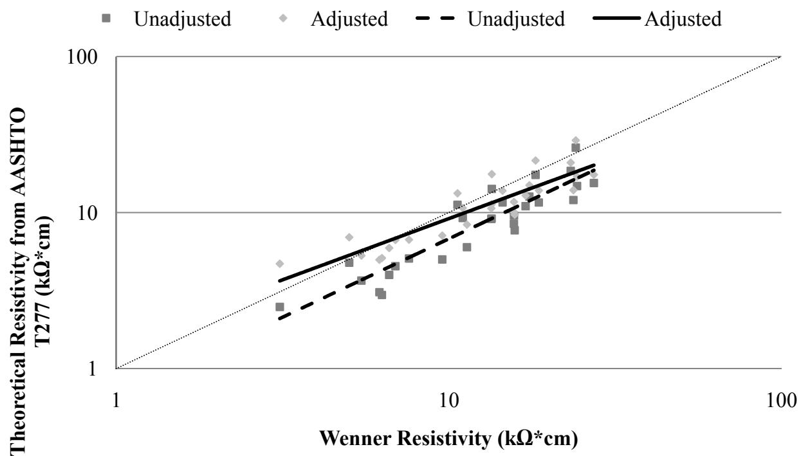
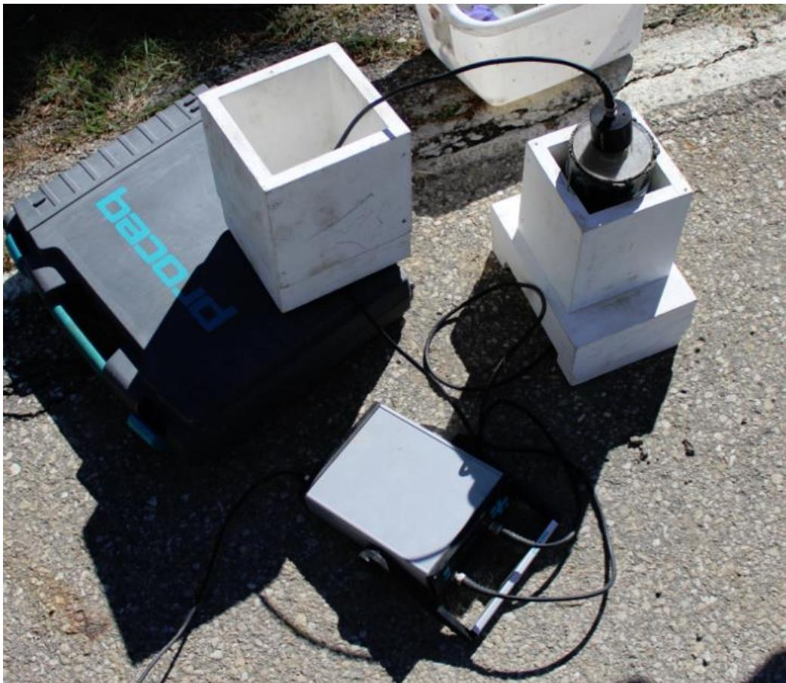

Calorimetry
Calorimetry is a test method within Hydration, Heat & Maturity for measuring the Heat of Hydration of cementitious materials by quantifying the rate of heat evolution over time to characterize hydration kinetics [3]. This exothermic chemical reaction directly influences early-age concrete properties such as workability, setting behavior, and strength gain [1], allowing monitoring to detect deviations in constituent characteristics and predict performance [6]. The technique is used for concrete quality control, mix characterization, and performance prediction [1]. Calorimeters are categorized by thermal management: adiabatic devices maintain near-zero heat loss through active environmental control, semi-adiabatic units allow limited heat transfer to approximate adiabatic conditions, and isothermal instruments measure constant heat flow at a fixed temperature [1]. In contrast, the Solution Calorimeter determines hydration heat indirectly via acid dissolution differences rather than continuous thermal monitoring [1].
Sources (17)
Sub-concepts (5)
Overview of Calorimetry in Cementitious Materials
The heat signature of concrete mixtures is characterized by specific parameters, including slope 1, slope 2, maximum temperature, area under the curve, and time to maximum temperature [2]. Within this characterization, slope 1 is calculated using the maximum and minimum temperatures up to the peak, whereas slope 2 uses the data after the maximum temperature [2].

Heat signature for mixtures containing greater than 80% Type IPM PC [2]Furthermore, calorimetry can be used to differentiate heat evolution of mortars made with different materials and subjected to different curing conditions [3].
 Calorimetry results for the incompatible materials [3]
Calorimetry results for the incompatible materials [3]
Calorimeter Types and Operating Principles
Conduction calorimeters utilize a heat flow sensor placed on a common aluminum heat sink, with an additional reference aluminum block used to reduce noise signals during measurement [4]. For instance, the PTC-1 calorimeter model features eight separate channels for simultaneous specimen testing, where heat flow causes a temperature difference across the sensor that creates a voltage signal proportional to the amount of heat flow [4]. This voltage signal generated by heat flow is then converted into the rate of heat evolution by applying a calibration factor based on a reference material such as aluminum [4].
For more precise measurements, isothermal calorimeters utilize aluminum sample holders resting on heat flow sensors connected to a common aluminum heat sink, where the resulting voltage signal is calibrated against a reference aluminum block to determine the rate of heat evolution [4].
Isothermal calorimetry is a specific mode within the broader field of calorimetry that maintains the sample and reference at a constant temperature to measure heat flow directly [4]. In this setup, the heat generated by hydration flows rapidly to its surroundings, allowing for the direct measurement of heat flow from the specimen [1]. This method enables the determination of total heat evolution by summing the measured heat over time, although it is typically limited to seven days due to signal sensitivity constraints [3].
Unthermostated heat conduction calorimeters can quantify retardation and detect cement-admixture incompatibility by monitoring ambient temperature stability and heat capacity balance [1].
- Traditional method, largely superseded by calorimetry for continuous monitoring
 Semi-adiabatic calorimeter–IQ drum (www.quadreliservice.com) [1]
Semi-adiabatic calorimeter–IQ drum (www.quadreliservice.com) [1]
Standardized Testing Applications
Calorimetry is easy and repeatable for selected isothermal calorimeter devices, facilitating its use in standard testing procedures [3]. While mortar setting time tests using normal consistency provide comparative data for cementitious materials, they do not indicate the actual setting time of the concrete mixture design to be placed [5]. However, the thermal set times obtained from both AdiaCal and isothermal calorimetry tests show a close relationship with ASTM C403 test results, allowing the effects of water reducer dosage and fly ash replacement levels on concrete setting time to be identified through calorimetry [6].
 Comparison of the set times from ASTM C 403 and calorimetry tests [3]
Comparison of the set times from ASTM C 403 and calorimetry tests [3]
Calorimetry employs solution calorimeters to determine thermodynamic properties by measuring heat exchange within liquid media [1]. This approach allows for the assessment of characteristics such as hydration enthalpy through traditional methods like ASTM C186, which measures the heat of solution [1].
To address the current lack of accepted measurement standards despite the widespread acceptance of heat signature importance, the development of nonproprietary calorimetry standards aims to create a test rugged enough for routine field quality control (QC) use [7].
Semi-adiabatic calorimetry is standardized under ASTM C1753, which governs testing procedures alongside other fresh concrete properties such as slump (ASTM C143) and air content (ASTM C231) [8].
The ASTM C1679 standard governs semi-adiabatic calorimetry testing, which is often conducted alongside other laboratory tests such as slump, unit weight, temperature, air content (ASTM C143, C138, C231), and mechanical properties like compressive strength (ASTM C39) at 3, 7, 28, and 56 days [9].
Simple Field-Based Calorimetry Methods
Various methods exist to monitor thermal behavior, including the Dewar Test, which is an insulated vessel measuring the temperature rise of paste or mortar, and the Coffee Cup Test, a simple test using reference sand for compatibility screening. In coffee cup testing, an initial acceptance criterion flags potential early stiffening issues if the temperature change exceeds 3°F within any five-minute period [10]. Other methods include the insulated bucket test (Lafarge), which utilizes a 4×8 mortar or concrete sample with a thermocouple.

Handheld Vibrator and #4 Sieve Used for Set Time Test [10]Various calorimetry methods are employed to monitor hydration kinetics, with simple, inexpensive devices such as Dewar flasks, coffee cups, and sprayed-foam baskets providing critical hydration feedback within a 12–48 hour window [3].

Calorimeter unit [3]Impact of Admixtures and SCMs on Heat Evolution
The thermal and setting characteristics of concrete are significantly influenced by various admixtures and supplementary cementitious materials (SCMs). Fly ash replacement in binary cements generally reduces water demand, functioning as a water-reducing agent that improves flowability and delays the peak rate of adiabatic temperature rise by approximately 1.5 hours compared to concrete without fly ash [11]. While fly ash replacement increases paste/concrete set time regardless of clinker type [11], a 25% replacement rate with fly ash has been shown to increase setting time and greatly lower the heat of hydration in concrete applications [2]. In contrast, slag replacement does not extend the dormant period of cement hydration and may slightly accelerate initial set time [11]. The fineness of SCMs directly influences thermal profiles; for instance, Grade 120 ground granulated blast-furnace slag (GGBFS) produces a significantly higher heat of hydration than Grade 100 GGBFS because it is ground more finely [2], meaning the heat signature of concrete mixtures containing Grade 120 GGBFS is significantly larger than those with Grade 100 GGBFS due to the finer particle size of the former [5]. Mixtures containing silica fume exhibit a larger heat signature compared to other SCMs due to increased pozzolanic action, yet replacing cement with 3% or 5% silica fume has a negligible effect on the overall heat signature [2], allowing for its use in high-performance concreting without altering thermal behavior [5]. Furthermore, metakaolin concrete can be formulated to closely match the heat of hydration curves of ordinary Portland cement by incorporating metakaolin at amounts less than 10% by weight [2], and the maximum heat of cement hydration decreases as SCM replacement levels increase, resulting in a lower risk of thermal cracking compared to ordinary Portland cement concrete [11].
 Effect of fly ash on binary cement concrete heat signature [11]
Effect of fly ash on binary cement concrete heat signature [11]
Chemical admixtures also play a critical role in modulating hydration. Superplasticizers mildly retard concrete setting and reduce early-age heat generation without affecting the total heat of hydration [1], while water reducers can decrease total heat generation and temperature rise when used to lower cement content while maintaining specified strength and slump [1]; however, exceeding the recommended dosage of water reducers significantly decreases early-age compressive strength, though this retardation effect dissipates by 28 days when strengths converge with properly dosed mixes [5]. Retarders decrease early-age heat of hydration and temperature rise, with values becoming equal to non-retarded mixes at approximately 3–7 days [1], whereas accelerating admixtures increase the rate of heat evolution during the setting stage and may also increase heat liberation in the hardening stage depending on their chemical composition [1]. Specifically, the addition of citric acid to rapid-set cement extends the dormant period and shifts the peak rate of heat generation later in time, effectively acting as a retarding admixture [4]. Pastes containing citric acid exhibit a rapid increase in cumulative heat from approximately 25 J/g to 180 J/g between 5 and 10 hours after mixing, representing an increase about twice that of conventional pavement cement pastes [4]; after 10 hours, the rate of heat generation for pastes containing rapid-set cement, latex, and citric acid becomes much steadier compared to earlier stages [4], and at 20 hours, the cumulative heat reaches approximately 200 J/g [4].
 Effect of superplasticizer on cement hydration (adapted from Jolicoeur et al. 1998) [1]
Effect of superplasticizer on cement hydration (adapted from Jolicoeur et al. 1998) [1]
Advanced hydration techniques and monitoring methods further refine concrete performance. The incorporation of superabsorbent polymers (SAPs) into concrete slightly delayed both initial and final setting times relative to control mixtures, a phenomenon attributed to an increase in the effective water-to-cement ratio resulting from insufficient water absorption by the SAP particles during mixing [12]. The heat flow and cumulative heat generated by cement pastes containing SAPs were analyzed using the four hydration phases proposed by Bullard et al. (2011): initial formation, dormant period, acceleration period, and deceleration period [12]. Calorimetry tests confirmed that cement pastes containing SAPs experienced increased hydration due to water provided by the polymers, which was corroborated by thermogravimetric analysis showing higher bound water values in SAP-containing samples compared to controls [12]. Regarding internal curing, using lightweight fine aggregate (LWFA) maintains higher temperatures than conventional concrete after the first few hours of hydration, indicating an increased degree of hydration over time [8], though the inclusion of LWFA for internal curing does not affect the maturity of concrete despite improving the degree of hydration over time [8]. Finally, monitoring these processes requires precise instrumentation; simple isothermal calorimetry tests can clearly reveal a second heat evolution peak related to fly ash hydration in concrete mixes, a feature that is generally not observed in AdiaCal or IQ Drum semi-adiabatic tests, highlighting the sensitivity of different calorimeter types to SCM reactions [6].
 Calorimetry strength test results (psi) [8]
Calorimetry strength test results (psi) [8]
These low-cost methods are frequently used to investigate the effects of supplementary cementitious materials or chemical admixtures on hydration kinetics [3].

Effect of cement sources on heat of hydration [3]
Effect of curing temperature on hydration (adapted from Escalante-Garcia et al. 2000) [1]Influence of Mixing Energy and Material Composition
High-shear mixing at speed two (approximately 14,000 rpm) for 60 seconds produces the earliest major heat generation and highest rate of hydration compared to standard Hobart mixing methods [13]. Due to more thorough particle coating, this high-shear mixing consistently yields a degree of hydration approximately 6 percent higher than standard Hobart mixing [13], and the use of two-stage high-shear mixing can increase 28-day compressive strength by approximately 10 percent compared to standard dry batch processes [13]. While increased mixing energy reduces plastic viscosity and peak stress, further mixing does not significantly improve rheological properties once optimal uniformity is reached [13]; notably, fly ash-containing pastes require lower mixing energy to reach optimal uniformity compared to pure cement pastes [13]. Additionally, rapid-set cements exhibit a sharp heat generation peak without any dormant period, indicating that initial hydration occurs very quickly and setting time is consequently faster [4].
 Heat of hydration results for 100% PC, high shear mixer [13]
Heat of hydration results for 100% PC, high shear mixer [13]
Predictive Applications: Setting Time, Strength, and Workability
The derivative of the semi-adiabatic temperature curve is used to determine setting time, where the maximum of the first derivative correlates to final set and the maximum of the second derivative correlates to initial set [3]. This method allows for predicting setting time (R²=0.95 initial, R²=0.96 final set vs. ASTM C 403), curing period, thermal cracking risk, sawing/finishing time; characterizing cement; identifying cement-admixture incompatibility; verifying mix proportions; and selecting mixes for environmental conditions [1][3]. Calorimetry can predict early-age strength gain up to two days using heat indexes related to the first derivative and area under the curve [3], while the area underneath the heat signature curve generated by semi-adiabatic calorimetry correlates directly with one-day compressive strength gain, providing a rapid indicator of early-age mechanical development [14]. Furthermore, calorimetry can predict sawing and finishing windows when complemented with heat evolution tests on materials to be used [3], noting that the sawing window typically opens before the temperature peak during hydration and closes once drying begins [15]. Calorimetry data serves as a direct input into mix design systems, allowing users to optimize concrete mixes based on material durability and other criteria alongside thermal performance metrics [7].
 Adiacal calorimetry test equipment for heat of hydration of concrete [14]
Adiacal calorimetry test equipment for heat of hydration of concrete [14]
Calorimetry serves as the fundamental measurement technique for determining heat evolution rates in cementitious materials [6]. These calorimetric data provide the primary input for calculating hydration parameters, which are essential for interpreting material behavior through methods such as the Heat Index Method within programs like HIPERPAV II [6]. By allowing users to directly enter these experimentally derived heat evolution parameters, the reliance on empirical chemical-based functions is reduced, thereby improving the reliability of early-age concrete analysis [6].
The thermal profile can be used to assess setting times using arbitrary fractions such as 20% or 50% temperature rise, though these thresholds are not uniquely tied to the physical state of set [15]. Specifically, the calorimetry fraction method using a 20 percent temperature rise threshold correlates well with initial set times measured by ultrasonic pulse velocity (UPV) when applied to semi-adiabatic calorimetry curves, suggesting that the thermal profile can effectively predict setting times in field conditions [16]. As testing temperature increases in simple isothermal calorimetry, the variation in thermal set time decreases, implying that potential concrete set time and strength development problems are more likely to manifest during winter construction compared to summer construction [6]. Regarding curing temperatures, at low curing temperatures (50°F), early-age strength development rates for ternary cement mortar concrete are significantly slower than those of binary cement concrete, while at high curing temperatures (90°F) the rates become comparable [11]. Strength development is also influenced by curing methods; a sudden increase in average compressive strength from 4,711 psi at 3 days to 5,667 psi at 7 days is attributed to air curing facilitating further strength development after initial water curing [4]. Concrete containing rapid-set cement continues to develop strength over long-term air curing conditions, reaching 7,816 psi at 400 days [4], with compressive strength values for rapid-set cement concrete increasing by a factor of three within a testing timeframe from 3 hours to 400 days [4].
 Type I, binary, and ternary cements, respectively. The initial set time decreased 0.9, 0.8, and 1.1 hours for the concrete made with Lafarge Type I/II, binary, and ternary cements, respectively. Note that the set time drops of binary/ternary cement concrete are comparable with or less than that of OPC concrete. This indicates that binary/ternary cement concrete will have equal or less slump loss to/than OPC concrete under a hot weather. It is of great benefit to use SCM concrete for hot weather concreting. (a) Holcim cement [11]
Type I, binary, and ternary cements, respectively. The initial set time decreased 0.9, 0.8, and 1.1 hours for the concrete made with Lafarge Type I/II, binary, and ternary cements, respectively. Note that the set time drops of binary/ternary cement concrete are comparable with or less than that of OPC concrete. This indicates that binary/ternary cement concrete will have equal or less slump loss to/than OPC concrete under a hot weather. It is of great benefit to use SCM concrete for hot weather concreting. (a) Holcim cement [11]
The heat index method utilizes the first derivative of the calorimeter curve and the area under the curve to characterize mortar features, predict set time, and assess early-age strength up to two days, allowing for the differentiation of heat evolution in mortars made with varying materials and curing conditions [3].

Development of heat indexes for mortar containing fly ash [3]Validation Studies and Field Performance
Concrete made with binary and ternary cements exhibits datum temperatures higher than -10°C, which is the standard threshold used in time-temperature factor calculations for ordinary Portland cement concrete [11]. For instance, at the Fancuo Hydropower Station in China, a ternary blended cement with GGBFS and fly ash achieved an adiabatic temperature rise of 47.9°C, representing approximately a 75% reduction compared to normal Portland cement concrete [2]. To monitor these thermal properties, the RILEM Round-Robin test program demonstrated that for adiabatic tests, 50% of temperature rise variations fall within a narrow range of only 2 K, while semi-adiabatic mean temperature rises are typically 2%–3% lower than true adiabatic results [1]. Furthermore, field validation studies have utilized commercial semi-adiabatic calorimeters alongside UPV testing on 4x8 inch cylinder molds placed in stable wooden frames to maintain temperature consistency with the slab environment, allowing for direct comparison of setting times determined via thermal profiles versus ultrasonic velocity changes [17].
 Temperature increase of mass concrete under adiabatic conditions (adapted from Mindess and Young 1981) [1]
Temperature increase of mass concrete under adiabatic conditions (adapted from Mindess and Young 1981) [1]
The validation of calorimetry test protocols has been extensively documented through FHWA Project 17. Phase II (wang-2007-simple-rapid-test-heat-evolution-phase2) validated the protocol using ~120 mortar mixes with a Thermometric isothermal calorimeter and AdiaCal semi-adiabatic calorimeter, finding channel variation <5%, confirmed operator repeatability, and distinct heat signatures across four curing temperatures (10–40°C); additionally, set time prediction using the Heat Index Method correlates strongly with ASTM C 403 (R²=0.95/0.96) [3]. Phase III (wang-2008-simple-rapid-test-heat-evolution-phase3) further validated the protocol at three field construction sites (Atlantic, IA; Alma Center, WI; Ottumwa, IA) with 27 concrete mixes total, confirming a strong correlation between AdiaCal semi-adiabatic calorimeter set times and ASTM C403 (R² > 0.95), establishing a two-tier testing recommendation of isothermal for daily lab QC and semi-adiabatic for field set time prediction, and validating HIPERPAV software modifications for direct calorimetry heat evolution input [6]. In broader process management, Statistical Process Control (SPC) techniques, specifically control charts, are utilized to identify unusual variations in material or construction processes rather than determining pass/fail status against acceptance criteria [10].
 AdiaCal calorimeter [6]
AdiaCal calorimeter [6]
Limitations and Alternative Monitoring Techniques (UPV)
Isothermal calorimetry is generally limited to a seven-day duration because signal sensitivity limitations make it difficult to distinguish hydration heat from background noise beyond that period. [1]
Calorimetry encompasses adiabatic calorimeters, which are specialized instruments designed to measure heat evolution by maintaining the sample temperature equal to that of its surroundings [3]. These devices generally require as long as a week to complete their tests [3]. Consequently, because most available calorimetry equipment is expensive and complex, it is often considered unsuitable for direct field application in concrete engineering [1].
Isothermal tests cannot predict concrete temperature increases in real structures because they do not account for cement reactivity changes due to fluctuating temperatures. [1]
The calorimetric fraction method (20% temperature rise) did not predict setting times as well as Ultrasonic Pulse Velocity for the 16-site field study. The coefficient of determination was only R² = 0.15, indicating the thermal profile is not uniquely tied to setting for the range of mixtures tested. This was attributed to the arbitrary nature of the 20% fraction threshold and the fact that temperature rise is influenced by factors beyond setting, such as mixture proportioning and ambient conditions. [15]
 Initial set time determined by calorimetry versus UPV [15]
Initial set time determined by calorimetry versus UPV [15]
Calorimetry is sensitive to environmental conditions and extraneous data peaks when using derivative methods for setting determination. [3]
Calorimetry is sensitive to environmental conditions and extraneous data peaks when determining setting time via derivative methods. [3]
 Repeatability of calorimeter tests performed by a given operator at different times [3]
Repeatability of calorimeter tests performed by a given operator at different times [3]
During AASHTO T277 resistivity testing, larger temperature variations produce larger Joule effect adjustments due to higher currents passing through interconnected voids in high-permeability mixtures. [5]

Joule effect adjustment – resistivity vs. AASHTO T277 resistivity (1 in.=2.54 cm) [5]Ultrasonic pulse velocity (UPV) monitoring provides an alternative method for measuring initial set by tracking the speed of sound through a concrete sample, with initial set identified as the time when the velocity begins to rise. This approach has been validated using commercial p-wave devices where transducers are placed in contact with a 4x8 inch cylinder mold at both the bottom and on a floating polyethylene disk at the surface. [17]
 Typical UPV data with initial set taken as the time when the velocity starts to rise as marked [15] [17]
Typical UPV data with initial set taken as the time when the velocity starts to rise as marked [15] [17]
A commercial UPV device utilizes two longitudinal wave transducers operating at a frequency of 54 kHz to track the speed of sound through concrete samples. [15]

Test setup with sample and transducers in a wooden frame for stability [15]Initial set is identified in ultrasonic testing as the specific time when the measured pulse velocity begins to rise. [15]
 Typical UPV data with initial set taken as the time when the velocity starts to rise, as marked [1] [15]
Typical UPV data with initial set taken as the time when the velocity starts to rise, as marked [1] [15]
Future Directions in Standardization and Thermal Transport
Beyond heat evolution, calorimetry research has identified the need to develop standardized test procedures for measuring additional thermal transport properties of concrete mixes, specifically specific heat and thermal conductivity. These parameters are critical for quantifying the impact of hydration on early-age behavior and long-term pavement performance. [7]
Thermal Activation Energy Effects
The effect of curing temperature on hydration rate is measured implicitly, as the activation energy required to convert results to an isothermal reference must be determined.
Related
- Heat of Hydration
- Activation Energy
- Maturity Method
- Cement Hydration
- Hydration, Heat & Maturity
- Adiabatic Calorimeter
- Heat Index Method
- Isothermal Calorimeter
- Semi-adiabatic Calorimeter
- Solution Calorimeter
References
- K. Wang, Z. Ge, J. Grove, J. M. Ruiz, and R. Rasmussen, "Developing a Simple and Rapid Test for Monitoring the Heat Evolution of Concrete Mixtures (Phase 3)," CTRE, Iowa State University, Ames, IA, Rep. FHWA Project 17 (Phase I), 2006. [Online]. Available: https://www.intrans.iastate.edu/wp-content/uploads/2018/03/CalorimeterReportPhaseIII.pdf
- P. Tikalsky, V. Schaefer, K. Wang, B. Scheetz, T. Rupnow, A. St. Clair, M. Siddiqi, and S. Marquez, "Development of Performance Properties of Ternary Mixes, Phase 1," Center for Transportation Research and Education, Ames, IA, Rep. TPF-5(117), 2007. [Online]. Available: https://www.intrans.iastate.edu/research/completed/development-of-performance-properties-of-ternary-mixes-phase-1/
- K. Wang, Z. Ge, J. Grove, J. M. Ruiz, R. Rasmussen, and T. Ferragut, "Simple and Rapid Test for Monitoring the Heat Evolution of Concrete Mixtures, Phase 2," Center for Transportation Research and Education, Ames, IA, 2007. [Online]. Available: https://www.intrans.iastate.edu/wp-content/uploads/2018/03/calorimeter.pdf
- K. Wang, B. M. Shankaramurthy, A. Anand, Y. Sargam, K. Freeseman, and B. Phares, "Performance Evaluation of Very Early Strength Latex-Modified Concrete (LMC-VE) Overlay," Institute for Transportation, Iowa State University, Ames, IA, Rep. TR-771, 2024. [Online]. Available: https://bec.iastate.edu/wp-content/uploads/2024/10/performance_evaluation_of_LMC-VE_overlay_w_cvr.pdf
- P. Tikalsky, P. Taylor, S. Hanson, and P. Ghosh, "Development of Performance Properties of Ternary Mixtures: Laboratory Study on Concrete," National Concrete Pavement Technology Center, Ames, IA, Rep. TPF-5(117), 2011. [Online]. Available: https://www.intrans.iastate.edu/research/completed/development-of-performance-properties-of-ternary-mixtures-laboratory-study-on-concrete/
- K. Wang, J. M. Ruiz, J. Hu, Z. Ge, Q. Xu, J. Grove, and R. Rasmussen, "Simple and Rapid Test for Monitoring the Heat Evolution ..., Phase III," National Concrete Pavement Technology Center, Ames, IA, 2008. [Online]. Available: https://www.intrans.iastate.edu/wp-content/uploads/2018/03/CalorimeterReportPhaseIII.pdf
- D. Harrington, R. Rasmussen, D. Merritt, T. Cackler, and P. Taylor, "Long-Term Plan for Concrete Pavement Research and Technology—The Concrete Pavement Road Map (Second Generation): Volume II, Tracks (FHWA-HRT-11-070)," National Center for Concrete Pavement Technology, Iowa State University, Ames, IA, 2012. [Online]. Available: https://www.fhwa.dot.gov/publications/research/infrastructure/pavements/pccp/11070/11070.pdf
- A. Daghighi, P. Taylor, H. Ceylan, and Y. Zhang, "Impacts of Internally Cured Concrete Paving on Contraction Joint Spacing Phase II," National Concrete Pavement Technology Center, Iowa State University, Ames, IA, Rep. TR-746, 2021. [Online]. Available: https://www.cptechcenter.org/wp-content/uploads/2021/05/IC_concrete_paving_impacts_phase_II_field_impl_w_cvr.pdf
- P. Taylor, T. Hosteng, X. Wang, and B. Phares, "Evaluation and Testing of a Lightweight Fine Aggregate Concrete Bridge Deck in Buchanan County, Iowa," National Concrete Pavement Technology Center and Bridge Engineering Center, Ames, IA, Rep. TR-648, 2016. [Online]. Available: https://www.intrans.iastate.edu/wp-content/uploads/2018/03/Buchanan_LWFA_bridge_deck_w_cvr.pdf
- J. Grove, G. Fick, T. Rupnow, and F. Bektas, "Material and Construction Optimization for Prevention of Premature Pavement Distress in PCC Pavements," National Concrete Pavement Technology Center, Ames, IA, Rep. TPF-5(066), 2008. [Online]. Available: https://www.intrans.iastate.edu/wp-content/uploads/2018/03/mco-final.pdf
- K. Wang and Z. Ge, "Evaluating Properties of Blended Cements for Concrete Pavements," Department of Civil, Construction and Environmental Engineering, Iowa State University, Ames, IA, 2003. [Online]. Available: https://www.intrans.iastate.edu/wp-content/uploads/2018/03/blended_cements-1.pdf
- B. Zhou, P. Taylor, and K. Wang, "Superabsorbent Polymer in Concrete to Improve Durability," National Concrete Pavement Technology Center, Iowa State University, Ames, IA, Rep. TR-793, 2025. [Online]. Available: https://www.intrans.iastate.edu/wp-content/uploads/2025/04/superabsorbent_polymer_in_concrete_w_cvr.pdf
- T. D. Rupnow, V. R. Schaefer, K. Wang, and B. L. Hermanson, "Improving PCC Mix Consistency and Production Rate through Two-Stage Mixing," Center for Transportation Research and Education, Ames, IA, Rep. TR-505, 2007. [Online]. Available: https://www.intrans.iastate.edu/wp-content/uploads/2018/03/two-stage-mix-1.pdf
- P. Taylor, P. Tikalsky, K. Wang, G. Fick, and X. Wang, "Development of Performance Properties of Ternary Mixtures: Field Demonstrations and Project Summary," National Concrete Pavement Technology Center, Ames, IA, Rep. TPF-5(117), 2012. [Online]. Available: https://www.intrans.iastate.edu/wp-content/uploads/2018/03/ternary_final_w_cvr.pdf
- P. Taylor and X. Wang, "Comparison of Setting Time Measured Using Ultrasonic Wave Propagation with Saw-Cutting Times on Pavements," National Concrete Pavement Technology Center, Ames, IA, Rep. TR-675, 2015. [Online]. Available: https://www.intrans.iastate.edu/wp-content/uploads/2018/03/PCC_setting_time_and_joint_sawing_w_cvr.pdf
- X. Wang, P. Taylor, and D. King, "Evaluation of Modified Concrete Mixture Proportions for the City of West Des Moines," National Concrete Pavement Technology Center, Ames, IA, 2016. [Online]. Available: https://www.intrans.iastate.edu/wp-content/uploads/2018/03/WDM_modified_concrete_mixture_proportions_w_cvr.pdf
- P. Taylor and X. Wang, "Concrete Pavement MDA: Comparison of Setting Time Measured Using Ultrasonic Wave Propagation With Saw-Cutting Times on Pavements in Iowa," National Concrete Pavement Technology Center, Ames, IA, Rep. TPF-5(205), 2014. [Online]. Available: https://www.intrans.iastate.edu/research/completed/comparison-of-setting-time-measured-using-ultrasonic-wave-propagation-with-saw-cutting-times-on-pavements-in-iowa/
Feedback on this page